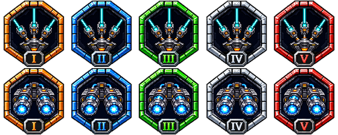

Real native-engine previews with controlled review inputs and an invulnerable pilot. Weapon/effect films include the game mixer; the rotating-box clip is silent. These are feature showcases, not complete fights.
Download the build and films · Contents and test limits
